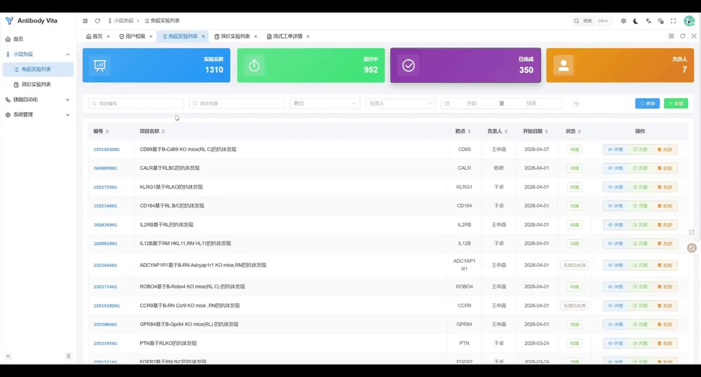

全流程连接
以发现主链串联免疫、筛选、序列、表达与评价，减少信息在环节间断裂。
Connected workflowBiocytogen · AI-powered antibody discovery
Antibody Vita 将免疫、筛选、测序、表达、评价与实验室自动化连接为一个可追溯、可协作的研发工作流。
One workflow foundation connecting scientific decisions, experimental data and high-throughput automation.
Platform vision
从实验现场，到数据智能
Antibody Vita 以真实实验路径组织数据和工单，让每一个样本、序列、候选分子和评价结果保持上下文连续，为规模化、AI 驱动的抗体发现提供可信的数据与协作基础。
以发现主链串联免疫、筛选、序列、表达与评价，减少信息在环节间断裂。
Connected workflow项目、样本、实验和结果共享同一语义，让团队看到一致、可追溯的事实。
One source of truth工单创建、设备执行与结果回传形成闭环，使高通量实验可管理、可复用。
Automation loopDiscovery workflow
一条主链，贯通发现全程
免疫计划、笼位、进度与 FACS / ELISA 效价结果统一进入发现入口。
单 B 细胞、噬菌体展示等路径并行推进，并保持项目上下文连续。
衔接文库构建、质检、Sanger / NGS 测序与候选序列分析。
将质粒、细胞、转染、表达和纯化纳入共享的分子与细胞支撑层。
整合结合、亲和力、功能及成药性结果，支撑候选分子持续收敛。
Platform capabilities
实验、数据、协作，统一发生
平台不改变科学判断，而是让判断所依赖的信息更完整，让跨团队协作和设备执行更自然地发生。
从项目入口到候选评价，数据随研发对象向前流动，保留每个决策节点的完整上下文。
统一项目、实验、样本、序列与结果之间的关联，支撑审计和科学复盘。
清晰的工单、状态和权限边界，减少跨实验环节的重复沟通。
通过工单校验、任务下发和结果回写连接实验室自动化模组。
Product experience
复杂流程，清晰呈现
统一工作台以实验对象和流程状态为核心，在保持专业信息密度的同时，提供一致、可预期的操作体验。

Built for the next scale of discovery
RenMice® 提供全人抗体发现的生物学基础；“千鼠万抗”（Project Integrum）据此沉淀规模化抗体资源；RenSuper™ Workstation 进一步连接 AI 筛选、实验验证与高通量自动化。在本项目中，Antibody Vita 聚焦实验执行、数据沉淀与团队协作，为相关研发场景提供流程和数据基础。
Biocytogen at a glance
立足真实生物学，连接全球新药研发
百奥赛图（SSE：688796；HKEX：02315）是一家创新技术驱动新药研发的国际性生物技术公司。 公司以自主研发的基因编辑技术为核心，构建覆盖抗体发现、模型与临床前研究的研发体系。
查看公司简介数据来源：百奥赛图公司简介、全人抗体库及 2026 年官方投资者关系公告；动态业务数据以百奥赛图官网最新披露为准。
Antibody discovery, connected.